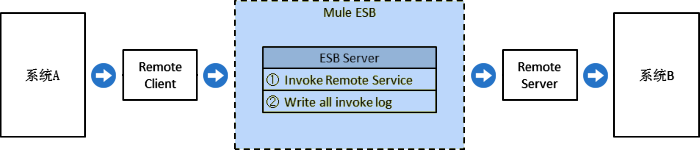

| 应用模式 | 普通模式 | |
| 模式说明 |
 |
普通模式是指，调用方系统通过集成平台间接访问1个或多个服务生产者的webservice，即：集成平台通过本地webservice接收调用方系统的调用请求，本地webservice会将调用请求直接转发给1个或多个服务生产者webservice；集成平台自身只负责转发调用，不做任何数据处理。规则要求：调用方系统调用的集成平台本地webservice的接口方法定义，必须与服务生产者的webservice的相应接口方法定义完全相同。 |
|  | ||